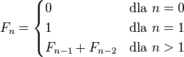

Ciąg Fibonacciego
Poniżej prezentujemy zdjęcie drzewa wywołań funkcji dla programu z pierwszej części:

Można na nim zobaczyć, że funkcja „fibonacci” wywoływana jest wiele razy dla tych samych argumentów.
Np. dla argumentu ??? funkcja wykonywana jest aż ??? razy. Wobec tego niepotrzebnie
kilka razy obliczamy ten sam wyraz ciągu. Postarajmy się to wyeliminować. Jednym z pierwszych
sposobów jaki może przyjść na myśl, to użycie globalnej tablicy, w której będziemy
pamiętać wyliczone wcześniej wartości funkcji.
Spróbuj poprawić funkcję „int fibonacci(n)” z pierwszej części lekcji. Funkcja powinna
zapamiętywać wyniki w globalnej tablicy tab (przypomnimy, iż tablica globalna przy
uruchomieniu programu jest wypełniana zerami) i nie pozwalać, aby wielokrotnie obliczany
był ten sam wyraz ciągu. Funkcja „fibonacci” powinna poprawnie działać dla argumentów n,
będącymi liczbami naturalnymi od 0 do 98.
W razie problemów z implementacją tej funkcji możesz skorzystać ze wskazówek,
które powinny doprowadzić Cię do poprawnego rozwiązania. Po zakończeniu implementowania
tej funkcji porównaj swoje rozwiązanie z funkcją wzorcową, a następnie przejdź do kolejnej części lekcji.